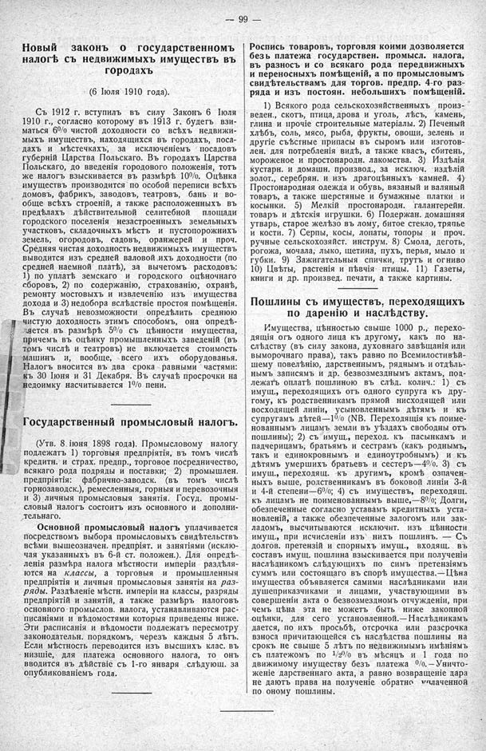

Лист источника 145
Скан

Распознанный текст
99 —
Новый законъ о государственномъ
налогѣ съ недвижимыхъ имуществъ въ
городахъ
(6 Іюля 1910 года).
Съ 1912 г. вступилъ въ силу Законъ 6 Іюля
1910 г., согласно которому въ 1913 г. будетъ взи-
маться 6% чистой доходности со всѣхъ недвижи-
мыхъ имуществъ, находящихся въ городахъ, поса-
дахъ и мѣстечкахъ, за исключеніемъ посадовъ
губерній Царства Польскаго. Въ городахъ Царства
Польскаго, до введенія городового положенія, тотъ
же налогъ взыскивается въ размѣрѣ 10%. Оцѣнка
имуществъ производится по особой переписи всѣхъ
домовъ, фабрикъ, заводовъ, театровъ, бань и во-
обще всѣхъ строеній, а также расположенныхъ въ
предѣлахъ дѣйствительной селитебной площади
городского поселенія незастроенныхъ земельныхъ
участковъ, складочныхъ мѣстъ и пустопорожнихъ
земель, огородовъ, садовъ, оранжерей и проч.
Средняя чистая доходность недвижимыхъ имуществъ
выводится изъ средней валовой ихъ доходности (по
средней наемной платѣ), за вычетомъ расходовъ:
1) по уплатѣ земскаго и городского оцѣночнаго
сборовъ, 2) по содержанію, страхованію, охранѣ,
ремонту мостовыхъ и извлеченію изъ имущества
дохода и 3) недобора вслѣдствіе простоя помѣщенія.
Въ случаѣ невозможности опредѣлить среднюю
чистую доходность этимъ способомъ, она опредѣ-
ляется въ размѣрѣ 5% съ цѣнности имущества,
причемъ въ оцѣнку промышленныхъ заведеній (въ
томъ числѣ и театровъ) не включается стоимость
машинъ и, вообще, всего ихъ оборудованья.
Налогъ вносится въ два срока равными частями:
къ 30 Іюня и 31 Декабря. Въ случаѣ просрочки на
недоимку насчитывается 1% пени.
Государственный промысловый налогъ.
(Утв. 8 іюня 1898 года). Промысловому налогу
подлежать 1) торговыя предпріятія, въ томъ числѣ
кредитн. и страх. предпр., торговое посредничество,
всякаго рода подряды и поставки; 2) промышлен.
предпріятія: фабрично-заводск. (въ томъ числѣ
горнозаводск.), ремесленныя, горныя и перевозочныя
и 3) личныя промысловыя занятія. Госуд. промы-
словый налогъ состоитъ изъ основного и дополни-
тельнаго.
Основной промысловый налогъ уплачивается
посредствомъ выбора промысловыхъ свидѣтельствъ
всѣми вышеозначен. предпріят. и занятіями (исклю-
чая указанныхъ въ 6-й ст. положен.). Для опредѣ-
ленія размѣра налога мѣстности имперіи раздѣля-
ются на классы, а торговыя и промышленныя
предпріятія и личныя промысловыя занятія на раз-
ряды. Раздѣленіе мѣстн. имперіи на классы, разряды
предпріятій и занятій, а также размѣръ налоговъ
основного промыслов. налога, устанавливаются рас-
писаніями и вѣдомостями которыя приведены ниже.
Эти расписанія и вѣдомости подлежать пересмотру
законодательн. порядкомъ, черезъ каждыя 5 лѣтъ.
Если мѣстность переводится изъ высшихъ клас. въ
низшіе, для платежа основного налога, то онъ
вводится въ дѣйствіе съ 1-го января слѣдующ. за
опубликованіемъ года.
Роспись товаровъ, торговля коими дозволяется
безъ платежа государствен. промысл. налога,
въ разносъ и со всякаго рода передвижныхъ
и переносныхъ помѣщеній, а по промысловымъ
свидѣтельствамъ для торгов. предпр. 4-го раз-
ряда и изъ постоян. небольшихъ помѣщеній.
1) Всякого рода сельскохозяйственныхъ произ-
веден., скотъ, птица, дрова и уголь, лѣсъ, камень,
глина и прочіе строительные матеріалы. 2) Печеный
хлѣбъ, соль, мясо, рыба, фрукты, овощи, зелень и
другіе съѣстные припасы въ сыромъ или изготов-
лен. для потребленія видѣ, а также квасъ, сбитень,
мороженое и простонародн. лакомства. 3) Издѣлія
кустарн. и домашн. производ., за исключ. издѣлій
золот., серебрян. и изъ драгоцѣнныхъ камней. 4)
Простонародная одежда и обувь, вязаный и валяный
товаръ, а также шерстяные и бумажные платки и
косынки. 5) Мелкій простонародн. галантерейн.
товаръ и дѣтскія игрушки. 6) Подержан. домашняя
утварь, старое желѣзо въ лому, битое стекло, тряпье
и кости. 7) Серпы, косы, лопаты, топоры и проч.
ручные сельскохозяйст. инструм. 8) Смола, деготь,
рогожа, мочала, лыко, щетина, пухъ, перья, мыло и
губки. 9) Зажигательныя спички, трутъ и огниво
10) Цвѣты, растенія и пѣвчія птицы. 11) Газеты,
книги и др. произвед. печати, а также картины.
Пошлины съ имуществъ, переходящихъ
по даренію и наслѣдству.
Имущества, цѣнностью свыше 1000 р., перехо-
дящія огъ одного лица къ другому, какъ по на-
слѣдству (въ силу закона, духовнаго завѣщанія или
выморочнаго права), такъ равно по Всемилостивѣй-
шему повелѣнію, дарственнымъ, ряднымъ и отдѣль-
нымъ записямъ и др. безвозмезднымъ актамъ, под-
лежатъ оплатѣ пошлиною въ слѣд. колич.: 1) съ
имущ., переходящихъ отъ одного супруга къ дру-
гому, къ родственникамъ прямой нисходящей или
восходящей линіи, усыновленнымъ дѣтямъ и къ
супругамъ дѣтей—1% (NB. Переходящія къ поиме-
нованнымъ лицамъ земли въ уѣздахъ свободны отъ
пошлины); 2) съ имущ., переход. къ пасынкамъ и
падчерицамъ, братьямъ и сестрамъ (какъ роднымъ,
такъ и единокровнымъ и единоутробнымъ) и къ
дѣтямъ умершихъ братьевъ и сестеръ—4%. 3) съ
имущ., переходящ. къ другимъ, кромѣ означен-
ныхъ выше, родственникамъ въ боковой линіи 3-й
и 4-й степени—6%; 4) съ имуществъ, переходящ.
къ лицамъ не поименованнымъ выше,—8%; Долги,
обезпеченные согласно уставамъ кредитныхъ уста-
новленій, а также обезпеченные залогомъ или зак-
ладомъ, высчитываются исключит. изъ цѣнности
имущ., при исчисленіи изъ нихъ пошлинъ. — Съ
долгов. претензій и спорныхъ имущ., входящ. въ
составъ имущ, пошлина взыскивается при полученіи
наслѣдникомъ слѣдующихъ по симъ претензіямъ
суммъ или состоящаго въ спорѣ имущества.—Цѣна
имущества объявляется самими наслѣдниками или
душеприказчиками и лицами, участвующими въ
совершеніи акта о безвозмездномъ отчужденіи, при
чемъ цѣна эта не можетъ быть ниже законной
оцѣнки, для сего установленной.—Наслѣдникамъ
дается, по ихъ просьбѣ, отсрочка или разсрочка
взноса причитающейся съ наслѣдства пошлины на
срокъ не свыше 5 лѣтъ по недвижимымъ имѣніямъ
съ платежомъ по 1/2% въ мѣсяцъ и 1 года по
движимому имуществу безъ платежа %.—Уничто-
женіе дарственнаго акта, а равно возвращеніе дара
не даютъ права на полученіе обратно уплаченной
по оному пошлины.